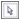
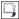

ыстрые ссылки на процедуры, описанные на этой странице:
• |
• |
• |
• |
• |
• |
Существует несколько способов определения редактируемой области изображения без использования данных о цвете изображения.
На изображении можно определить прямоугольные или эллиптические редактируемые области.
Округлая область, определенная с помощью инструмента Эллиптическая маска
Редактируемые области можно определять с помощью объектов. При создании редактируемой области, имеющей форму одного или нескольких объектов, следует удалить из нее объекты перед редактированием.
Редактируемые области можно определять с помощью текста. При наборе текста шрифт и характеристики стиля созданной редактируемой области определяются пользователем. Можно также создать редактируемую область на основе существующего текста.
Редактируемую область можно определить путем вставки информации из буфера обмена в окно изображения в качестве редактируемой области. Создаваемая область является плавающей редактируемой областью, которую можно редактировать и передвигать, не изменяя пиксели изображения под ней.
Редактируемую область можно определить, выделив область изображения с помощью инструмента Маска свободной формы, как на бумаге с помощью карандаша, или щелкнув различные точки на изображении, чтобы связать сегменты прямых линий.
Редактируемую область можно также определить с помощью кисти.
Можно определить ограниченную редактируемую область на основе краев существующей редактируемой области, чтобы выделить части изображения с помощью одного цвета, текстуры или специального эффекта. Существующая рамка маски будет заключена в новую рамку маски для определения ограниченной редактируемой области.
В качестве редактируемой области можно также определить изображение целиком. Эта функция очень удобна в том случае, если требуется применить специальный эффект, требующий создания маски для всего изображения. Для получения сведений о специальных эффектах см. раздел Применение специальных эффектов.
| Определение прямоугольной или эллиптической редактируемой области |
1. |
В наборе инструментов выберите один из следующих инструментов.
|
• |
Прямоугольная маска |
• |
Эллиптическая маска |
2. |
На панели свойств нажмите кнопку Обычный .
|
3. |
На панели свойств выберите один из следующих параметров в списке
Стиль.
|
• |
Стандарт: определение прямоугольной или эллиптической
редактируемой области вручную.
|
• |
Фиксированный размер: указание ширины и высоты прямоугольной
или эллиптической редактируемой области.
|
• |
По ширине: определение прямоугольной редактируемой области по
ширине изображения. Можно указать высоту редактируемой области и
значение скругления углов прямоугольника.
|
• |
По высоте: определение прямоугольной редактируемой области по
высоте изображения. Можно указать ширину редактируемой области и
значение скругления углов прямоугольника.
|
4. |
Перетащите курсор в окне изображения, чтобы определить
редактируемую область вручную, или щелкните, чтобы расположить
редактируемую область определенного размера и ориентации.
|
При использовании стиля маски Стандарт можно определить
прямоугольную или округлую редактируемую область, нажав и
удерживая нажатой клавишу Ctrl после начала перетаскивания
курсора в окне изображения.
|
При использовании стиля маски Стандарт можно определить
редактируемую область от центра, нажав и удерживая нажатой
клавишу Shift после начала перетаскивания курсора в окне
изображения.
|
| Определение редактируемой области с помощью текста, объектов или содержимого буфера обмена |
Можно также нажать кнопку Создать маску на панели инструментов
Маска/Объект, чтобы определить редактируемую область с
помощью одного или нескольких выбранных объектов. Если панель
инструментов Маска/Объект не отображается, выберите Окно |
| Определение редактируемой области с помощью инструмента маски свободной формы |
1. |
В наборе инструментов выберите инструмент Маска свободной формы
|
2. |
На панели свойств нажмите кнопку Обычный .
|
3. |
Щелкните в окне изображения в том месте, где должен начинаться и
заканчиваться каждый сегмент линии.
|
4. |
Дважды щелкните, чтобы завершить создание абриса.
|
Для определения редактируемой области можно также перетащить
инструмент Маска свободной формы в окне изображения и дважды
щелкнуть, чтобы завершить создание абриса.
|

Редактируемая область, созданная с помощью инструмента маски свободной формы
| Определение редактируемой области путем рисования |
1. |
В наборе инструментов выберите инструмент Маска по кисти .
|
2. |
На панели свойств укажите атрибуты инструмента.
|
3. |
На панели свойств нажмите кнопку Обычный .
|
4. |
Перетащите курсор в окне изображения.
|
Чтобы изменить размер кончика кисти инструмента Маска по кисти,
удерживая нажатой клавишу Alt, перетащите курсор в окне
изображения до получения нужного размера кончика.
|
С помощью инструмента Маска по кисти можно нанести прямой
мазок кисти. Для этого нажмите и удерживайте нажатой клавишу
Ctrl после начала перетаскивания курсора в окне изображения.
Удерживая нажатой клавишу Ctrl, можно нажать и отпустить
клавишу Shift для переключения между горизонтальными и
вертикальными мазками кисти.
|
| Определение ограниченной редактируемой области |
1. |
В наборе инструментов выберите инструмент маски.
|
2. |
Определите редактируемую область.
|
3. |
Выберите Маска |
4. |
Введите значение в поле Ширина.
|
5. |
Выберите тип края в списке Края.
|
Плавные края, в отличие от резких, обеспечивают более постепенный
переход в фон.
|
| Определение целого изображения в качестве редактируемой области |
• |
Выберите Маска |
Copyright 2012 Corel Corporation. Все права защищены.